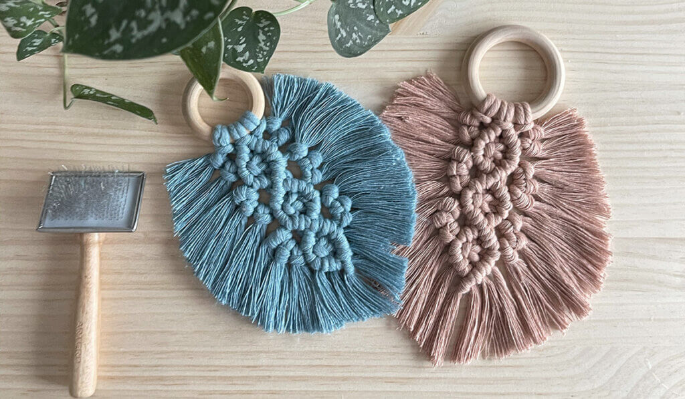
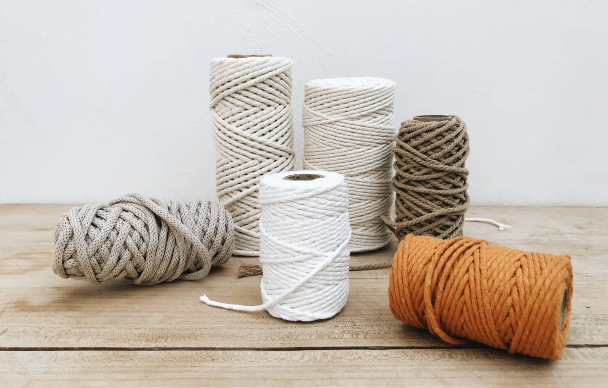
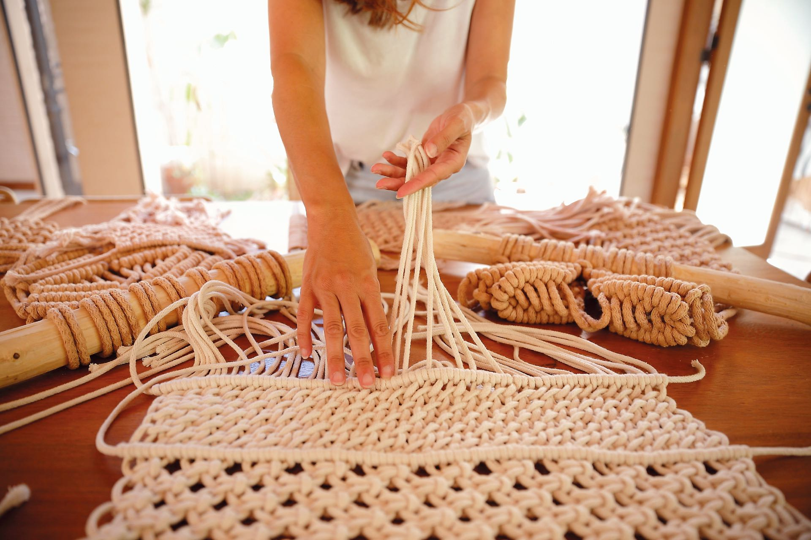

Arte con nudos
Conservando la Belleza de tus Creaciones
El macramé es un arte antiguo que utiliza nudos y cuerdas para crear hermosas piezas decorativas y funcionales. Ya sea que hayas tejido una intricada cortina, un elegante tapiz o una pulsera delicada, es importante saber cómo cuidar y mantener tus creaciones de macramé para preservar su belleza y durabilidad a lo largo del tiempo. En este artículo, exploraremos algunos consejos y prácticas clave para el cuidado y mantenimiento adecuado de las piezas de macramé.  El primer paso para asegurar la longevidad de tus creaciones de macramé es evitar la exposición directa a la luz solar intensa. La radiación ultravioleta puede dañar las fibras y los colores, provocando decoloración y deterioro. Por lo tanto, es recomendable colocar tus piezas de macramé en áreas donde no estén expuestas a la luz solar directa durante largos períodos de tiempo. Además, si vas a exhibir tus creaciones en una ventana, considera el uso de cortinas o persianas para filtrar la luz solar y proteger tus piezas. Otro aspecto importante del cuidado del macramé es mantenerlo alejado de la humedad excesiva. La humedad puede debilitar las fibras y propiciar la aparición de moho o hongos. Para evitar esto, asegúrate de mantener tus piezas de macramé en ambientes secos y bien ventilados. Si vives en una zona húmeda, considera el uso de deshumidificadores o bolsas de sílice para controlar la humedad en el área de almacenamiento. Además, es fundamental evitar el contacto directo con productos químicos agresivos, como blanqueadores, detergentes fuertes o limpiadores abrasivos. Estos productos pueden dañar las fibras y los colores del macramé, alterando su apariencia original. En su lugar, utiliza productos de limpieza suaves y específicos para tejidos delicados. Si tienes dudas, es recomendable probar el producto en una pequeña área no visible antes de aplicarlo a toda la pieza.  Cuando sea necesario limpiar tus piezas de macramé, evita sumergirlas en agua o lavarlas en máquinas. En su lugar, utiliza métodos suaves de limpieza en seco. Puedes emplear un cepillo de cerdas suaves o un paño limpio y húmedo para eliminar el polvo o las manchas superficiales. Si la pieza requiere una limpieza más profunda, considera llevarla a un profesional especializado en limpieza de tejidos delicados. El almacenamiento adecuado también es crucial para el cuidado a largo plazo de tus creaciones de macramé. Evita doblar o comprimir en exceso las piezas, ya que esto puede causar deformaciones y arrugas permanentes. Lo ideal es colgar tus piezas de macramé en perchas o barras, asegurándote de que estén protegidas de la luz y el polvo con fundas o bolsas de tela transpirable. Si no tienes suficiente espacio para colgarlas, enrollarlas cuidadosamente alrededor de un tubo o rollo de cartón grueso puede ser una alternativa viable. Finalmente, es importante revisar regularmente tus piezas de macramé en busca de posibles daños o desgastes. Si encuentras hilos sueltos, nudos deshechos o cualquier otro problema, es recomendable realizar las reparaciones necesarias lo antes posible. De esta manera, podrás mantener la integridad estructural de tus creaciones y evitar que los problemas empeoren con el tiempo.  En resumen, cuidar y mantener tus piezas de macramé requiere de atención y precaución. Evitar la exposición solar intensa, controlar la humedad, evitar productos químicos agresivos, limpiar con delicadeza, almacenar correctamente y reparar cualquier daño a tiempo son medidas clave para conservar la belleza y la durabilidad de tus creaciones de macramé. Siguiendo estos consejos, podrás disfrutar de tus piezas durante mucho tiempo y admirar la artesanía y el encanto que el macramé brinda a tu hogar o a tus accesorios personales.